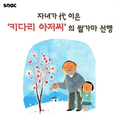
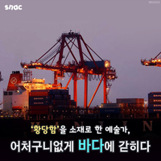
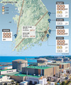

뉴스
최신기사
- [카드뉴스] 자녀가 代이은 '키다리 아저씨'의 쌀가마 선행
- 
- '얼굴없는 천사로' 온정을 전달합니다. 기사보기 : http://goo.gl/eU2T7f[조선일보 카드뉴스가 더 보고 싶다면?] [조선일보 페이스북에서 더 보기]
- [카드뉴스] '황당함'을 소재로 한 예술가, 어처구니없게 바다에 갇히다.
- 
- 한진해운 법정관리 사태로 바다에 표류하게 된 예술가 레베카 모스 [조선일보 카드뉴스가 더 보고 싶다면?] [조선일보 페이스북에서 더 보기]
- [사설] 상상 못할 비극 겪기 전에 地震 대비 태세 점검하라
- 2010년 1월 발생한 규모 7.0 아이티 지진 때 사망자가 27만명이었다. 한 달 뒤 규모 8.8 칠레 지진 때는 450여명이 사망했다. 두 나라 차이는 남미 최빈국 아이티..
- 관련기사
- [사설] 北核이란 癌은 보수 정권 9년간에도 커 왔다
- 북한은 지난 20여년간 핵개발을 한시도 멈추지 않았다. 총 5차례 북핵 실험 가운데 첫 핵실험은 진보 정권 때 있었지만 나머지 4번이 보수 정권인 이명박·박근혜..
- 관련기사
- 原電, 동해안에 18기 밀집… 1基만 사고 나도 연쇄참사 우려
- 
- 경북 경주에서 관측 사상 최대인 규모 5.8 지진이 발생하면서 이 일대 원자력발전소 안전에 대한 우려도 커지고 있다. 국내에서 운영되고 있는 24기의 원전 가운..
- 관련기사
- [선우정 칼럼] 10억엔은 부끄러운 돈인가
- 10억엔이 일본에서 왔다. 작년 12월 28일 한·일이 합의문에서 일본군위안부가 입은 마음의 상처를 치유하기 위해 일본 정부 예산으로 지원하겠다고 약속한 돈이..
- [만물상] 신종 '맛집 조작'
- 구글이 미국 대통령을 결정한다? 지난해 미국행동기술연구소가 이런 연구 결과로 논란을 불렀다. 연구팀은 유권자들이 후보자 정보를 검색할 때 뜨는 순서를 조작..